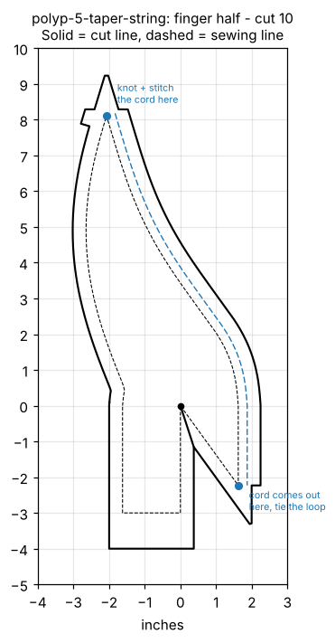
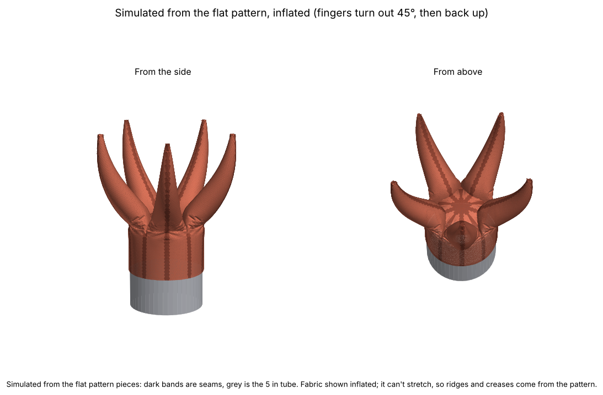
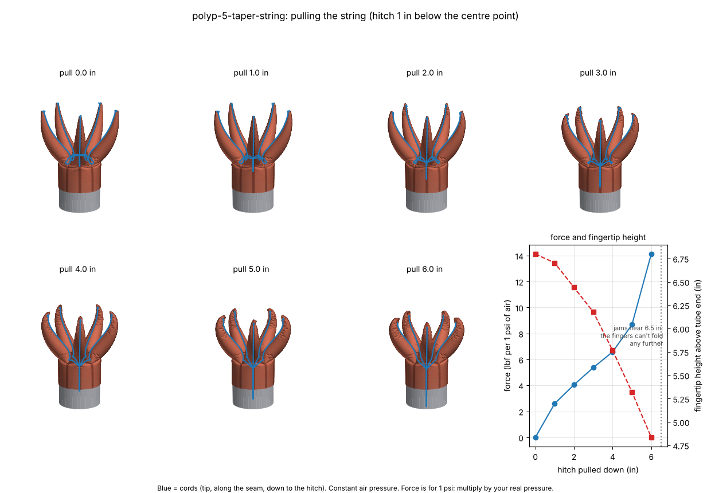

One finger half, cut 10. Solid line is the cut, dashed is the sew line, blue is the string tunnel (inner seam, tip to centre) on a wider 5/8 in allowance.

Cloth simulation of the sewn polyp with air in it. The tunnel and cord are not drawn here.

Five cords run from the fingertips along the inner seams to one hitch point 1 in below the centre point. The hitch is pulled down in 1 in steps. Constant air pressure, no tunnel friction.

| Hitch pulled down | Force (lbf per psi) | Fingertip height (in) | Centre point height (in) |
|---|---|---|---|
| 0 in | 0.0 | 6.8 | 1.0 |
| 1 in | 2.6 | 6.7 | 0.6 |
| 2 in | 4.0 | 6.4 | 0.1 |
| 3 in | 5.4 | 6.2 | -0.4 |
| 4 in | 6.6 | 5.8 | -0.8 |
| 5 in | 8.7 | 5.3 | -1.1 |
| 6 in | 14.1 | 4.8 | -1.2 |
The cord jams between 6 and 7 in of pull. Forces are for 1 psi of air: multiply by your real pressure (0.25 psi gives a quarter). Heights are above the end of the tube.
The tool lets you change cuff diameter, cuff length, finger length and more, and runs the simulations. It needs no typing in a terminal.
polyps, then fabric-pattern.Run Polyp Tool.command, choose Open, then Open again. You only need the right-click the first time.